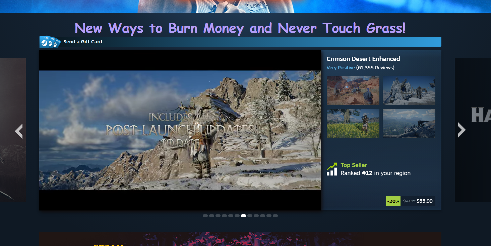

My Steam Dev Tools Vandalism
I used browser developer tools to temporarily "vandalize" Steam. Below is a screenshot showing my changes. These edits only appeared on my computer and did not affect the actual website.

What I "Vandalized"
I changed the text that says "Featured & Recommended" on Steam to "New Ways to Burn Money and Never Touch Grass!". I also changed the font to everyone's favorite, Comic Sans! Lastly I increased the font size to 40px and changed the color to a light purple.
-
Q: What text did you edit?
"Featured & Recommended" to "New Ways to Burn Money and Never Touch Grass!"
-
Q: What CSS properties did you modify?
font-family, font-size, color
-
Q: What made your edits interesting or amusing?
The comic sans, color, and new text just made me chuckle.
-
Q: Did you understand why some changes worked and some didn't?
Yeah. Some of the properties get overridden by more specific ones around Steam.
-
Q: Why did you choose the changes you did?
Steam is a bit of a Jenga tower with its styling so a simple change that doesn't break the rest of the site's layout and functionality would be easier to demonstrate.
-
Q: Were you able to understand how the HTML and CSS worked together to make the changes you made?
The HTML set up the structure and content while CSS controlled the presentation. Changing the element and properties let me change the page's default styling without altering the actual site.
-
Q: Do you think you have a better sense of how dev tools can be used Do you think you have a better sense of how dev tools can be used while crafting your own webpages?
Yes but I've used dev tools before so this was a good refresher!